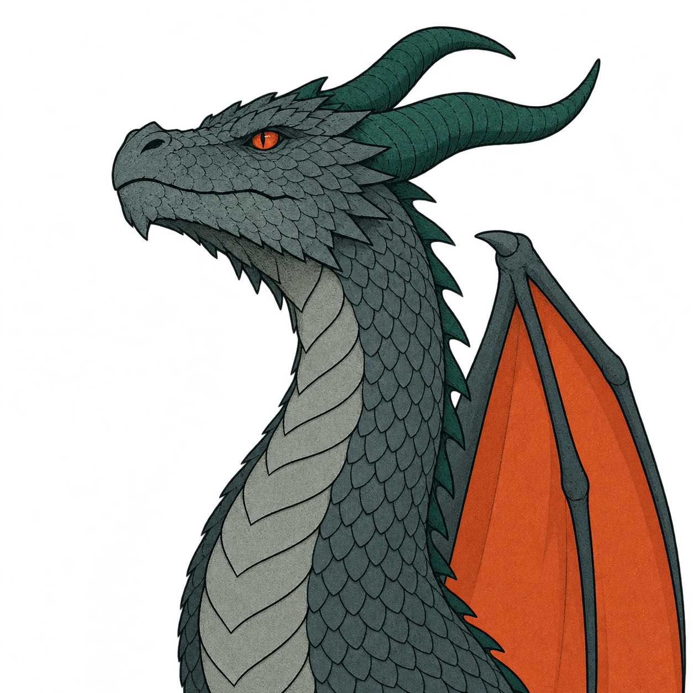
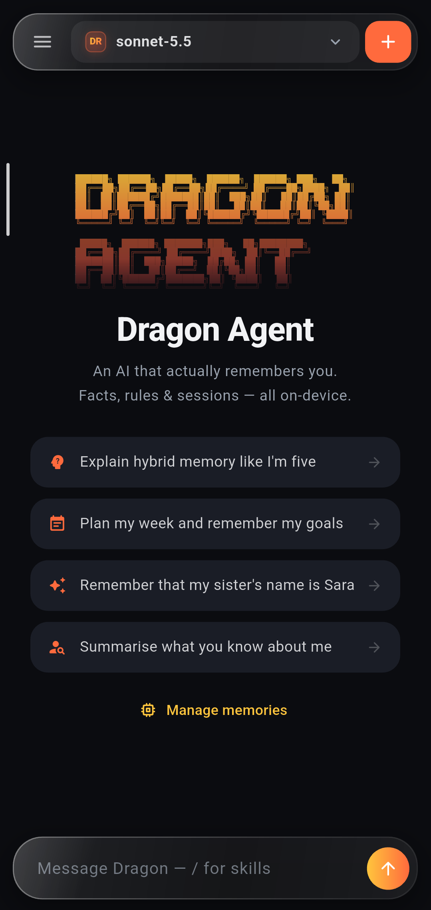

Dragon Agent Mobile
یک عامل هوش مصنوعی برای اندروید و iOS، با حافظهای که روی دستگاه خودتان میماند. متنباز و با کلید خودتان.



یک عامل هوش مصنوعی برای اندروید و iOS، با حافظهای که روی دستگاه خودتان میماند. متنباز و با کلید خودتان.

